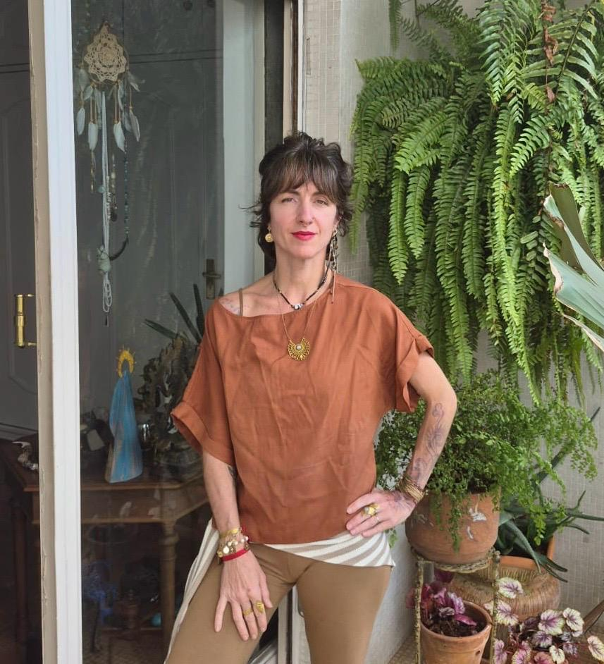
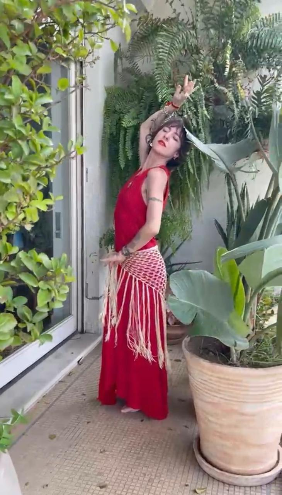

Bárbara Nunes
O corpo guarda toda
a história
de uma mulher.
E cada história merece ser dançada.
Dança Divina Integrativa — um caminho para habitar o próprio corpo com presença, respiração e verdade.
Quase quarenta anos dedicados ao estudo do corpo, do movimento e da consciência feminina.

Bárbara Nunes — criadora da Dança Divina Integrativa

Quem é Bárbara
Uma vida inteira dedicada
ao corpo que dança.
A dança chegou aos sete anos, pela expressão corporal. Depois vieram o balé clássico, a dança moderna e contemporânea, as danças brasileiras e africanas — passos que, sem que Bárbara soubesse, já gestavam silenciosamente o caminho que floresceria décadas mais tarde.
Nem tudo foi leveza. Ao lado da beleza da dança vieram também os julgamentos — primeiro de professores, depois dela mesma — que por um tempo a afastaram da liberdade que um dia sentiu ao dançar. Ainda assim, seguiu buscando.
Formou-se em Dança pela Universidade Federal da Bahia e estudou balé e dança moderna em Nova York. Mas foi fora da universidade que sua pesquisa mais profunda começou: na meditação, na Medicina Sagrada e no Contato Improvisação — e, mais tarde, na Índia, onde se aprofundou no Ayurveda e na Dança Oriental.
Hoje acredita que o corpo guarda toda a história de uma mulher, e que cada fase da vida deixa marcas que não precisam ser apagadas — apenas acolhidas como parte da própria beleza.
-
01
Um canal, não uma fórmula
Bárbara se reconhece, acima de tudo, como um canal de transmissão ancestral.
-
02
Uma missão simples
Oferecer caminhos para que as mulheres amadureçam com saúde, leveza e conexão consigo mesmas.
-
03
Trinta anos de estudo
Décadas dedicadas ao corpo feminino deram forma à Dança Divina Integrativa.
A caminhada
Uma trajetória contada
pelo próprio corpo.
Cada etapa foi vivida antes de ser compreendida.
-
Aos sete anos
Os primeiros passos
A expressão corporal a apresenta à dança. Vieram o balé clássico, a dança moderna e contemporânea, as danças brasileiras e africanas.
-
Nova York e Salvador
Os primeiros estudos
Balé clássico e dança moderna em Nova York. Formação em Dança pela Universidade Federal da Bahia.
-
Um encontro
Um novo caminho
A meditação, a Medicina Sagrada e o Contato Improvisação revelam que dançar podia ser um caminho de autoconhecimento — não apenas de expressão artística.
-
Índia
Ayurveda e Dança Oriental
Estudos aprofundados em meditação, massagem e Ayurveda. O encontro com a Dança do Ventre, o Tribal Fusion e o ATS revela uma sabedoria: o movimento nasce do ventre, origem da vida.
-
Maternidade
O nascimento dos filhos
Dois partos naturais, em casa, expandem sua consciência corporal e confirmam, na experiência mais íntima da vida, tudo o que vinha descobrindo através do corpo.
-
Hoje
Dança Divina Integrativa
Da união entre a dança, a espiritualidade, o Ayurveda e a maternidade nasce a síntese de uma vida inteira dedicada ao corpo feminino.
Visão de mundo
Os pilares que sustentam
cada movimento.
Corpo como templo
O espaço através do qual a vida se manifesta e se expande.
Presença
Estar inteira no momento presente, sem viver no automático.
Movimento
A linguagem através da qual o corpo se organiza e se expressa.
Natureza
A fluidez da água e o ritmo dos ciclos naturais como inspiração.
Consciência
Habitar o corpo com mais consciência, um dia após o outro.
Vitalidade
Uma energia que nasce do ventre — origem da vida e da própria dança.
Feminino
Reconhecer a sabedoria que já existe dentro de cada mulher.
Sabedoria ancestral
Uma linhagem de consciência que atravessa gerações de mulheres.
O caminho
Dança Divina
Integrativa.
Mais do que uma forma de dançar — um caminho de reconexão com o corpo através do movimento, da respiração e da sabedoria feminina.
-
I
Movimento
Movimentos ondulatórios, circulares e espiralados dissolvem a rigidez e devolvem mobilidade à coluna e às articulações.
-
II
Respiração
A respiração se amplia, e o corpo volta a sentir espaço para existir.
-
III
Emoção
Dançamos também as emoções, permitindo que encontrem movimento, expressão e transformação.
-
IV
Integração
A dança deixa de se limitar à prática e passa a habitar a forma como respiramos, caminhamos e atravessamos a vida.
"O corpo guarda toda a história de uma mulher —
e cada fase merece ser acolhida."
A formação
Um caminho para
habitar o corpo.
Uma jornada para despertar a energia vital, recuperar a mobilidade e redescobrir a inteligência natural do corpo.
Para quem é
- Mulheres que sentem que o corpo pede um cuidado diferente.
- Quem deseja recuperar mobilidade, presença e vitalidade.
- Quem busca profundidade — não apenas uma nova forma de exercício.
- Quem deseja reconhecer a sabedoria que já existe em si.
Para quem não é
- Quem busca uma técnica de dança performática.
- Quem ainda não está disposta a se encontrar com o próprio corpo.
- Quem procura resultado imediato, sem processo.
O que você vai aprender
- 01Movimentos ondulatórios, circulares e espiralados que devolvem fluidez ao corpo.
- 02Práticas de respiração que ampliam a presença e dissolvem a rigidez.
- 03Como reconhecer e dançar também as próprias emoções.
- 04Fundamentos da Dança Oriental e sua sabedoria sobre o ventre.
- 05Como levar o movimento para além da prática — para o cotidiano.
Como se vive a formação
O que você encontrará
Uma jornada para reencontrar o corpo como ele sempre foi: vivo, sensível e sábio.
Quero viver essa experiênciaHistórias reais
Mulheres que já
dançaram esse caminho.
Eu não sabia que meu corpo guardava tanta história. A dança me ensinou a acolher cada parte dela.

O acompanhamento foi o que mais me tocou. Nunca me senti sozinha, mesmo nas semanas mais difíceis.

Não é sobre aprender passos. É sobre lembrar que o corpo já sabe dançar.

Reencontrei uma vitalidade que eu achava perdida havia anos. O movimento devolveu isso a mim.

Aprendi que presença não é conceito. É o que eu sinto quando danço.

Atmosfera
Fragmentos de uma
jornada contemplativa.


Assim como uma rosa leva tempo para florescer,
o corpo também pede o seu próprio tempo.
Perguntas frequentes
Ainda com
alguma dúvida?
Se a sua pergunta não estiver aqui, é só chamar antes de decidir.
Você percorre módulos guiados de movimento, respiração e prática, com acompanhamento e um espaço de comunidade para caminhar junto com outras mulheres.
Não. A Dança Divina Integrativa não exige técnica prévia — o caminho começa exatamente de onde o seu corpo está hoje.
A jornada acontece em módulos progressivos, no seu ritmo, com acesso estendido para revisitar as práticas sempre que precisar.
Há acompanhamento próximo em cada módulo, além de um espaço de comunidade ativo com outras mulheres no mesmo caminho.
Não. É um caminho espiritual não dogmático, aberto a qualquer crença ou ausência dela.
A formação foi desenhada pensando em mulheres 40+, mas qualquer mulher em busca de presença e movimento é bem-vinda.
Basta clicar em qualquer botão "Conheça a formação" desta página. Você será direcionada para a página oficial de inscrição.
Dança Divina Integrativa